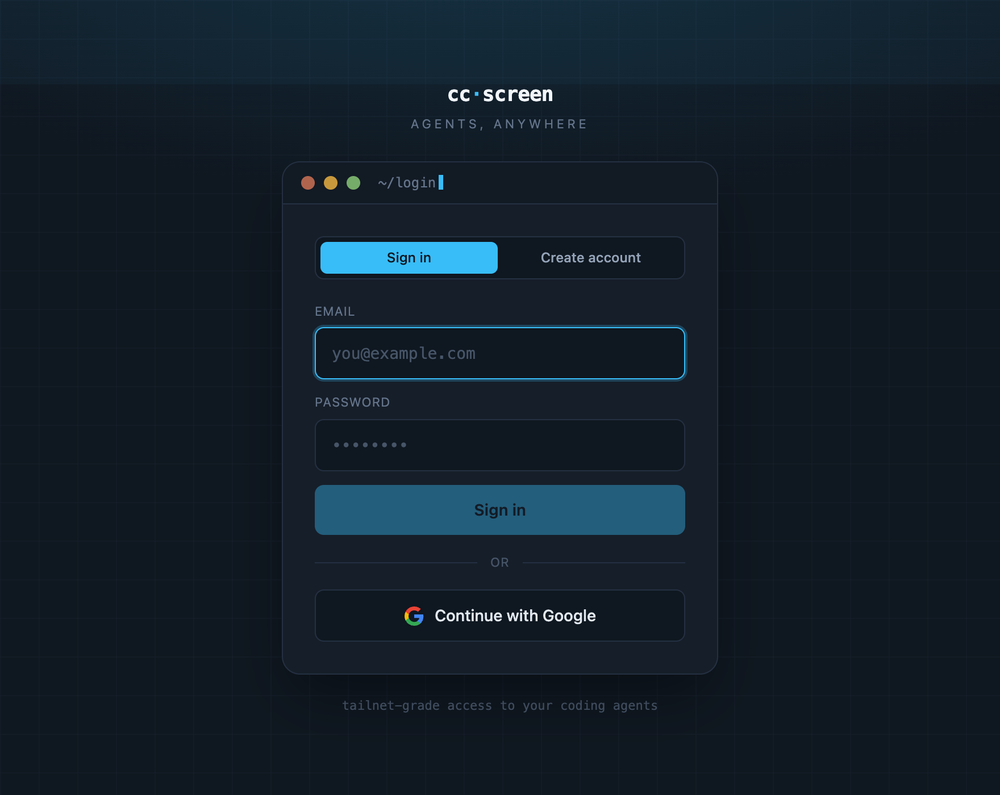
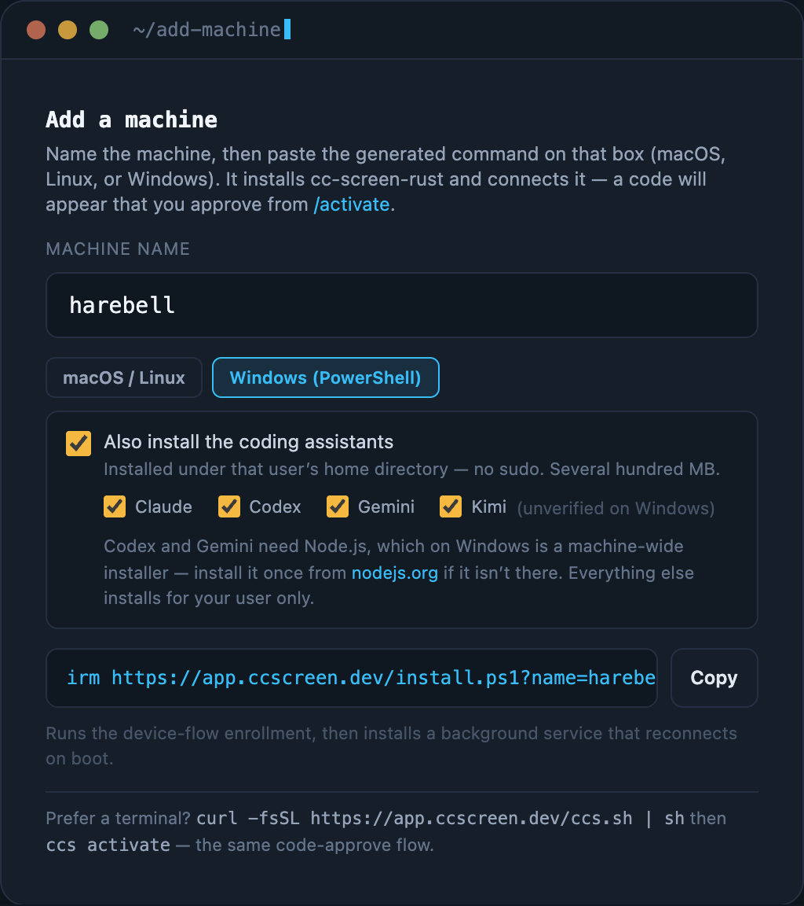
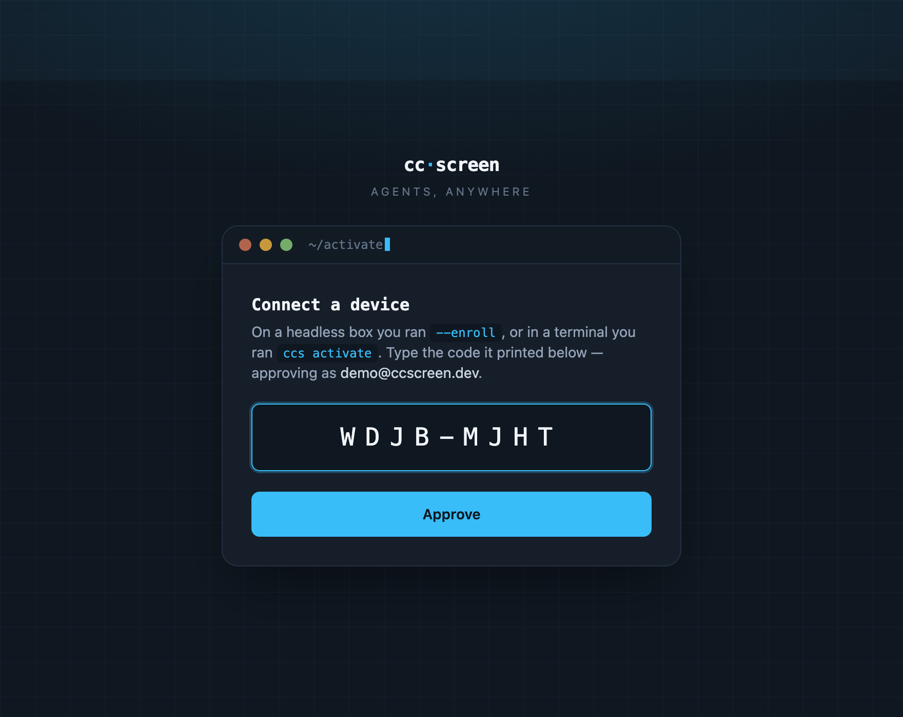
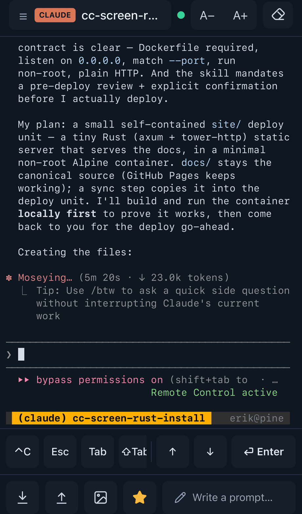

Quickstart
From nothing to a live coding session in five steps. You need one computer where your coding CLIs (or their installers) can live — macOS or Linux here; Windows readers, follow Install on Windows for step 2 and rejoin at step 3.
1. Create an account
Go to app.ccscreen.dev and sign up — email + password, or "Continue with Google". Signing up logs you straight in and lands you on your dashboard.

2. Connect a machine
On the computer where your coding agents should run, paste this one command
(replace <machine-name> with whatever you want to call the box, e.g.
my-laptop):
curl -fsSL https://app.ccscreen.dev/install.sh | sh -s -- <machine-name> --assistants
The dashboard's Add a machine card generates exactly this command for you, with the name filled in — copy it from there if you prefer.

What it does: installs the cc-screen agent into ~/.local/bin, installs any
missing coding assistants for your user (that's the --assistants flag — no
sudo, everything under your home directory), and connects the machine to your
account. Step-by-step detail is in
Install on macOS / Linux.
Here's the one-liner running, end to end (~15 s):
✓ claude (Claude Code) /home/erik/.local/bin/claude ✓ codex (Codex CLI) /home/erik/.local/bin/codex ✓ gemini (Gemini CLI) /home/erik/.local/bin/gemini ✓ kimi (Kimi CLI) /home/erik/.local/bin/kimi Approved — connecting as 'my-laptop'. ✓ Done — 'my-laptop' is connected and will reconnect automatically.
3. Approve the code
The installer prints a short code and waits:
To connect this machine, open https://app.ccscreen.dev/activate
and enter code: WDJB-MJHT
(waiting…)
Open app.ccscreen.dev/activate — on your phone is fine — type the code, and press Approve machine. Codes expire after 10 minutes; if one does, the installer just prints a fresh one, so there's nothing to redo.

Here's the whole handshake in about ten seconds — code typed, machine approved, dashboard dot flipping online:
Approving links the machine to your account. The installer finishes by registering a background service, so the machine reconnects by itself after every reboot.
4. Start your first session
The activation page flows straight into it: once the machine dials in, start your first session right from the success screen — pick an assistant (say, Claude) and a project folder, and you're in a live terminal. You can also do it any time from the session list: New session, pick the machine, the tool, and the directory.
The machine also appears on your dashboard with a pulsing online dot.
Try an image while you're at it: copy a screenshot and press Ctrl-V (⌘V on Mac) in the session — it lands in the assistant as an attachment, exactly as if you'd pasted it locally on that machine.

5. Put it on your phone
Open app.ccscreen.dev on your phone and use your browser's Add to Home Screen. cc-screen is a PWA: full-screen, an app icon, and (once you enable them) push notifications when an agent finishes its turn.
Next
- Using the web app — sessions, the grid, files, uploads, sharing.
- The ccs terminal client — the same fleet from a terminal. Sign
it in with
ccs activate— the same code-approve flow as step 3. - Add more machines any time — dashboard → Add a machine.